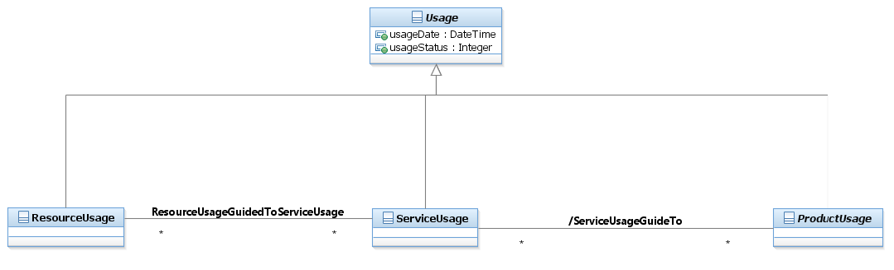

SID Models::Common Domain::Usage ABE::_Usage Addendum Figures::Figure U.07 - Resource/Service/Product Usage - as classes that inherited from Usage class. Diagram Figure U.07 - Resource/Service/Product Usage - as classes that inherited from Usage class. A resource usage represents any usage of resources in its broadest meaning, for example a usage of a product realized by a resource. A service usage represents any usage of service in its broadest meaning, for example or a usage of a service that realizes a product. A Product is realized as one or more Service(s) and/or Resource(s). A Product is created by instantiating a ProductOffering and adding it to a specific customer account. In order to charge a service (or a resource) usage, the service (or resource) has to be associated to a product. The product usage describes the usage of an instantiated Product.Theoretically there are many different ways to model resource, service and product usage. For example: • As classes that inherited from Usage class. • As different states of the same Usage class.The following Figure describes the first approach where ResourceUsage, ServiceUsage and ProductUsage usage abstract templates inherited from Usage class.

Properties:
View
Name
Figure U.07 - Resource/Service/Product Usage - as classes that inherited from Usage class.